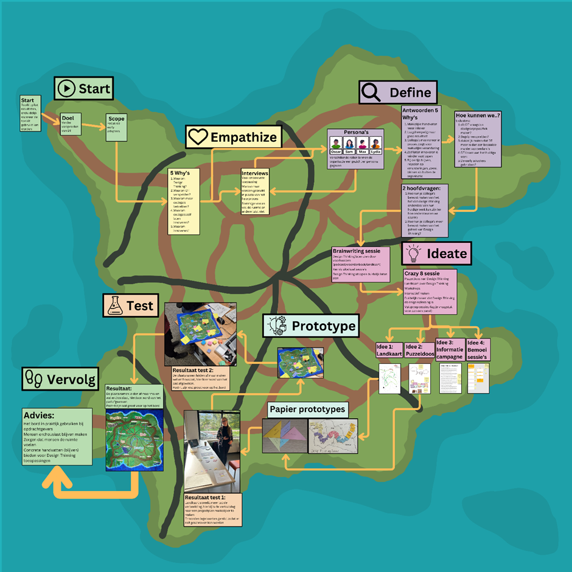
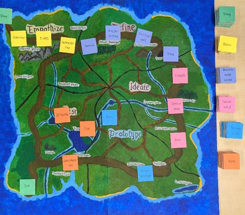

Design Thinking toolkit
Summary
As part of my traineeship, I worked on improving the adoption of the Design Thinking Toolkit within the organization. User testing revealed that while people were interested in using the toolkit, they struggled to understand when and how to apply it. To address this, I developed a new support tool that can be used as a visual aid and an extra explanation if needed. It took the form of a board with a island, to help colleagues see Design Thinking as a structured, process or a journey rather than a loose collection of activities.
Context
The Design Thinking Toolkit was created to spread Design Thinking practices across the
organization. Design Thinking offers a simple, human-centered approach to problem-solving and
small innovation questions.
It focusses on user needs and iteration. Using Design Thinking encourages colleagues to take
ownership of change and innovation, which was a goal for the innovation lab.
My assignment was to develop the toolkit further and make sure colleagues were able to use
it.
However, early user testing showed gaps in adoption: people were unsure about use cases,
suitable challenges, and how to select methods or steps. So I dediced to focus on inspiring and
spreading design thinking rather than purely continue development for a tool that lacked
context.
Process

For the process I used the Design Thinking methord and the different phases
Empathize
The differences between colleagues who embraced experimentation and those who didn’t feel
empowered to try were identified.
Learned that many saw Design Thinking as just a set of exercises, not a full process.
Colleagues lacked context on how to use the toolkit
Define
This phase focused on two central questions:
How do we make colleagues aware that Design Thinking can be part of their current work?
How do we communicate Design Thinking as an full process that can be applied to different
questions and challenges?
Ideate
Multiple group brainstorms were facilitated. The brainstorms generated multipe ideas for both the toolkit and how to archieve more adoption throughout the organization.

Prototype
Different aspects from the brainstorms were made in a paper prototypes. An A/B test was done between two different kind of interactions. After the test phase one of them was developed to a final prototype. Along with a digital version that was made
Test
The prototype and testing phase were done parallel. One thing was prototype to later be tested. The final prototype was tested and with that a final advice was given to the team.
Final design
The Eilandbord helps the Innovation Lab team convoys their message about Design Thinking easier. teams and their clients plan and visualize Design Thinking phases. By laying out steps as a journey across the island, it makes the process feel cohesive and concrete. The tool is supported by a facilitator’s guide and can be used independently or during workshops.
Reflection
This project showed me how important it is to balance tools with mindset. A toolkit alone doesn’t do much if no one understands how to use it. So by shifting the focus I made a visual aid that helped the original toolkit in its goal.